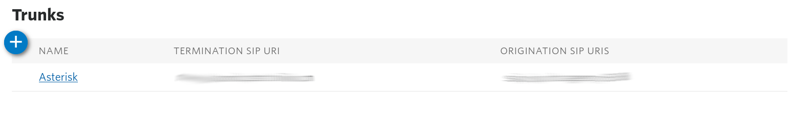
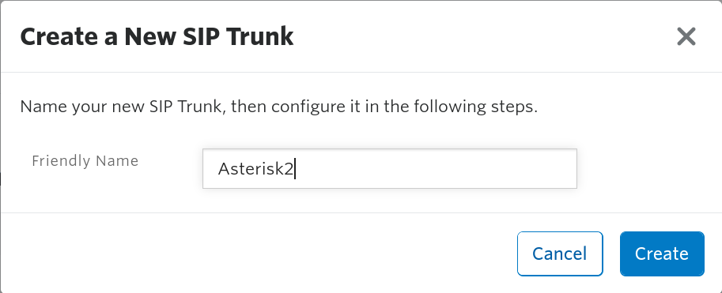
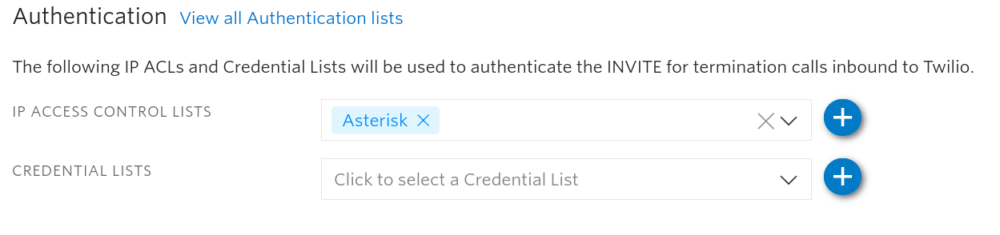
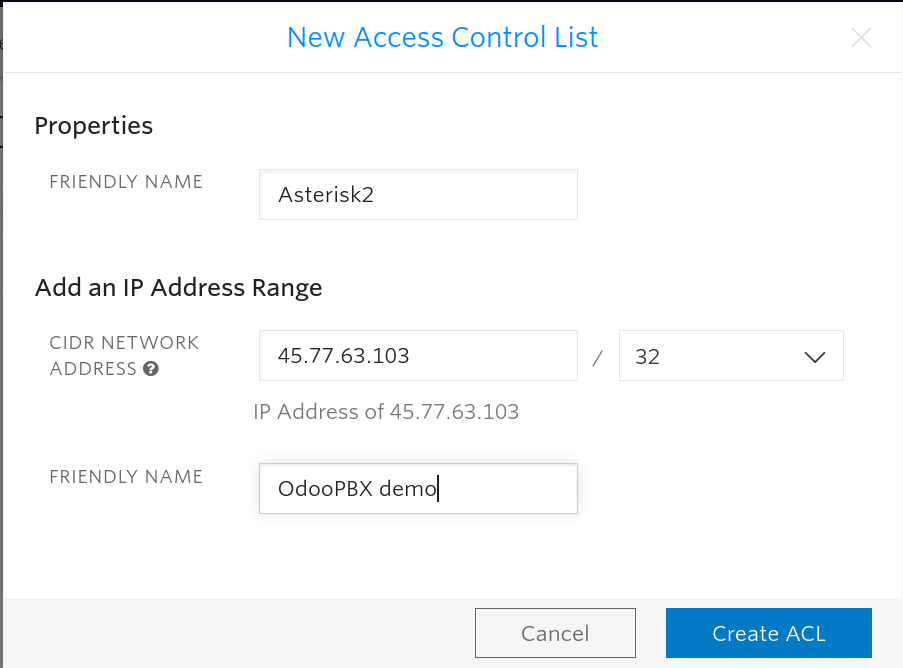
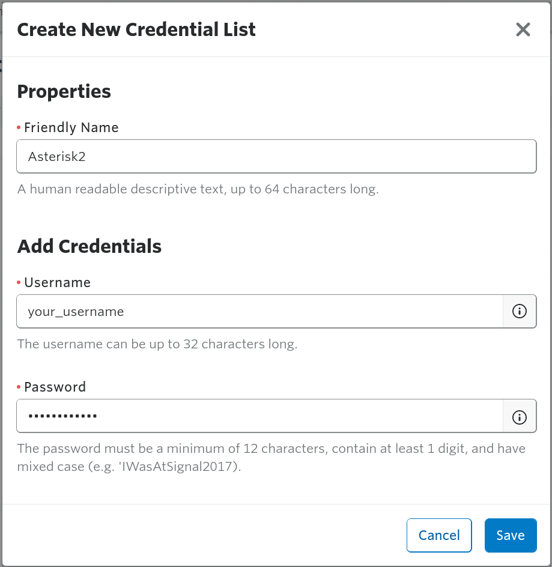
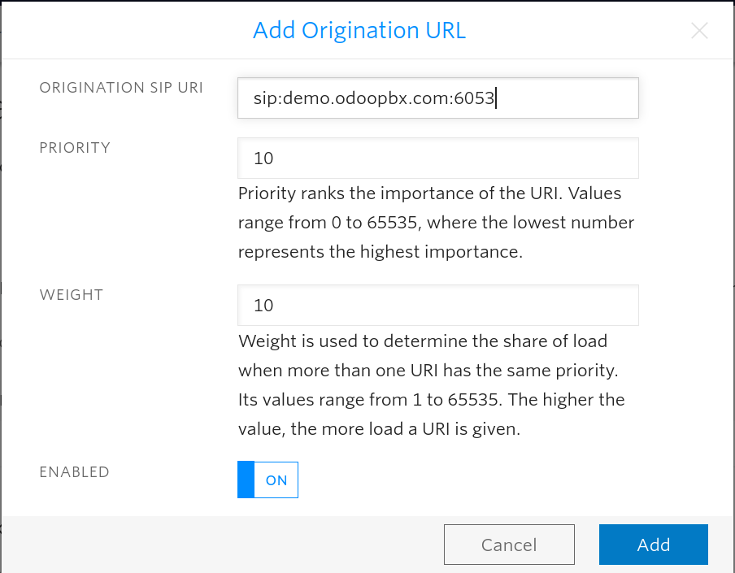
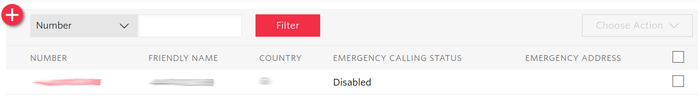
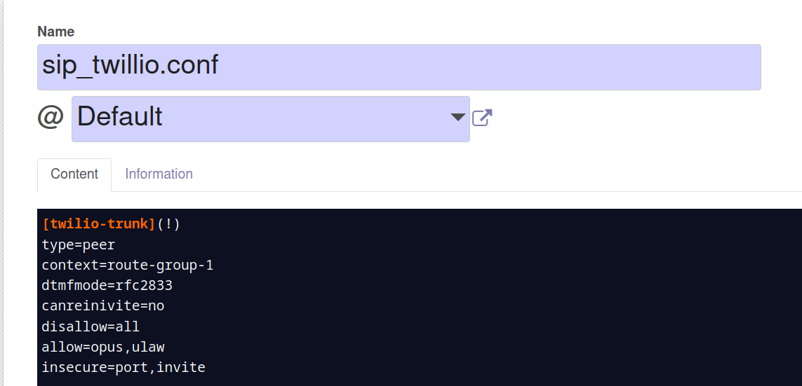
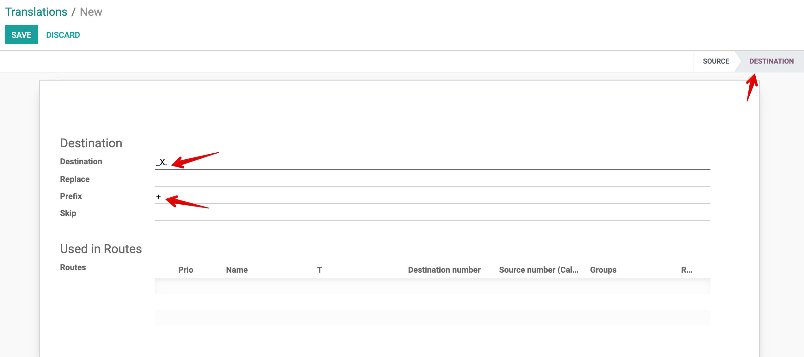

How to set up Twilio Elastic SIP Trunking with Odoo PBX¶
Twilio Configuration¶
Go to Twilio website at twilio.com and log into your Twilio account. Click on the All Products and Services button and select Elastic SIP Trunking.
On the Trunk Dashboard page go to the Trunks section and add a new trunk by clicking on the plus sign in the blue circle as shown in the screenshot below.
You will see a “Create a New SIP Trunk” form, that asks for the new trunk’s friendly name.
After you click on the
Createbutton, the settings page for a new trunk is opened. Go to the Termination page. There you’ll be asked for the Termination SIP URI. You need to add an unique name for your trunk, for exampleodoopbxdocsThis is the global termination URI -
odoopbxdocs.pstn.twilio.com. Twilio generates local termination URIs for different regions, as shown when clicking on Show Localized URIs button.Scroll down to the Authentication section. There you need to create at least an authentication list: either an IP Access Control List or a Credential List. The IP Access Control List is used when your PBX has a fixed IP address. If you set only the IP Access Control List, you can connect only from the IP addresses included there. Also, if you set only a Credential List, the Trunk connection is performed using a username and a password.
You can click on the plus sign on the right to create either one. For an IP Access Control List you need to add a friendly name, an IP address or a subnet and a friendly name for that address or subnet.
For a Credential List you need to write a friendly name, a username and a password.
You can also access the Credentials page from Twilio homepage by going to All Products and Services -> Elastic SIP Trunking -> Authentication.
Go to the Origination page. There you need to set up the URI from which the calls will come.
Click on the plus sign to add a new origination URI. This is the URI you use for logging in to your server. In case you are using a non-standard SIP port, add the port as well. For example, with the domain
demo.odoopbx.com, port6053, you need to set the URI tosip:demo.odoopbx.com:6053Go to the Numbers page to add a number to the trunk.

You can choose a number you have already bought, buy a single number or buy multiple numbers in bulk.
This finishes the trunk configuration on Twilio, next you have to go to your Odoo instance and configure the trunk.
Odoo PBX Configuration¶
Go to PBX -> Files and click on
Create. Set the file name tosip_twilio.confand the desired server. Copy the contents of the file from below and paste them into the Content field.Save the file. File contents:
[twilio-trunk](!) type=peer context=route-group-1 dtmfmode=rfc2833 canreinivite=no disallow=all allow=opus,ulaw insecure=port,invite ; Ireland Signalling Gateways [twilio1](twilio-trunk) host=54.171.127.192 [twilio2](twilio-trunk) host=54.171.127.193 [twilio3](twilio-trunk) host=54.171.127.194 [twilio4](twilio-trunk) host=54.171.127.195 ; North America Virginia Signalling Gateways [twilio5](twilio-trunk) host=54.172.60.0 [twilio6](twilio-trunk) host=54.172.60.1 [twilio7](twilio-trunk) host=54.172.60.2 [twilio8](twilio-trunk) host=54.172.60.3 ; North America Oregon Signalling Gateways [twilio9](twilio-trunk) host=54.244.51.0 [twilio10](twilio-trunk) host=54.244.51.1 [twilio11](twilio-trunk) host=54.244.51.2 [twilio12](twilio-trunk) host=54.244.51.3 ; Europe Frankfurt Signalling Gateways [twilio13](twilio-trunk) host=35.156.191.128 [twilio14](twilio-trunk) host=35.156.191.129 [twilio15](twilio-trunk) host=35.156.191.130 [twilio16](twilio-trunk) host=35.156.191.131 ; Asia Pacific Tokyo gateways [twilio17](twilio-trunk) host=54.65.63.192 [twilio18](twilio-trunk) host=54.65.63.193 [twilio19](twilio-trunk) host=54.65.63.194 [twilio20](twilio-trunk) host=54.65.63.195 ; Asia Pacific Singapore gateways [twilio21](twilio-trunk) host=54.169.127.128 [twilio22](twilio-trunk) host=54.169.127.129 [twilio23](twilio-trunk) host=54.169.127.130 [twilio24](twilio-trunk) host=54.169.127.131 ; Asia Pacific Disney gateways [twilio25](twilio-trunk) host=54.252.254.64 [twilio26](twilio-trunk) host=54.252.254.65 [twilio27](twilio-trunk) host=54.252.254.66 [twilio28](twilio-trunk) host=54.252.254.67 ; South America Sao Paulo gateways [twilio29](twilio-trunk) host=177.71.206.192 [twilio30](twilio-trunk) host=177.71.206.193 [twilio31](twilio-trunk) host=177.71.206.194 [twilio32](twilio-trunk) host=177.71.206.195
Go to PBX -> Files, remove the
Updatedfilter and search for sip.conf. To the end of the file add the line:#tryinclude sip_twillio.conf`Go to PBX -> Applications -> Trunks and create a new trunk with the following fields:
Host: Select the closest to you Termination URI from the Twilio website (All Products and Services -> Elastic SIP Trunking -> Trunks -> choose your trunk -> Termination).
From user: The username from Twilio’s Credential List, if you have set it up. Otherwise leave empty
SIP Secret: The password from Twilio’s Credential List. Leave empty if not set.
DMTF mode: RFC2833
Allow Codecs: opus,ulaw (Only ulaw is supported by default but you can ask Twilio to enable Opus and a few other codecs)
Disallow Codecs: All
NAT: No
Can reinvite: No
Route Groups: Incoming
The trunk configuration is finished. Next you need to create incoming and outgoing routes for your users, so they could call and receive calls.
Creating outgoing and incoming routes in OdooPBX¶
First you need to create an outgoing route. Go to PBX -> Applications -> Routes and click on Create. Next fill in the fields:
Destination number: _XXXXXXX. This means that any phone number with more than 7 digits will be directed to the trunk
Prio: 0
Type: SIP Trunk
SIP Trunk: the name of the trunk created above
Dial Timeout: 60
Dial Options: T
Record Calls: Mark if you need the calls to be recorded
Destination number translation¶
Twillio requires numbers to be sent in E.164 format (with +). So you need to create a translation rule that will prefix all numbers with +:
Source number translation¶
Next click on the Number Translation tab and click on Add a line for the Source Numbers field. After that click on Create and you will see the following form:
Click on the User field and choose what user you need to use the trunk number. Next in the Replace field enter the number in E.164 international format starting with +.
Next you need to create an incoming route, denoting the receiver of the incoming calls. Go to PBX -> Applications -> Routes and click on Create and fill in the fields:
Destination number: The phone number, without the + sign
Type: Can be Extension or Dialplan and select the dialplan or extension you want to redirect the call to.
Click on Save and next on Apply Changes. Test the incoming and outgoing calls.